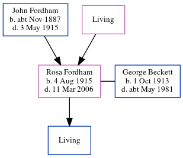

Rosa Estelle Beckett (née Fordham) 1915 - 2006
[ Home ] | [ Calendar ] | [ Surnames Index ] | [ Errors ] | [ Family History ]The child of John Fordham (a house boy on a farm) and Maria Rowland, Rosa Fordham was born in Ramsgate, Kent, England on 4 Aug 19151,2 and. She married George Beckett (a farm hand with whom she had 1 surviving child, ) in Thanet, Kent, England on 1 Apr 19403.
She died on 11 Mar 2006 in Lichfield, Staffordshire, England1.
Parents
- John Henry was born c. Nov 1887
- Maria Elizabeth
Citations
- England & Wales, Death Index: 1984-2005 Online publication - Provo, UT, USA: The Generations Network, Inc., 2007.Original data - General Register Office. England and Wales Civil Registration Indexes. London, England: General Register Office. © Crown copyright. Published by permission of the Cont
- England & Wales, FreeBMD Birth Index, 1837-1915 Online publication - Provo, UT, USA: The Generations Network, Inc., 2006.Original data - General Register Office. England and Wales Civil Registration Indexes. London, England: General Register Office. © Crown copyright. Published by permission of the Cont
- England & Wales, Marriage Index: 1916-2005 Online publication - Provo, UT, USA: The Generations Network, Inc., 2009.Original data - General Register Office. England and Wales Civil Registration Indexes. London, England: General Register Office. © Crown copyright. Published by permission of the Cont
Family Tree
Map
Generated by ged2site. Last updated on Jul 3, 2024
Known Issues
Can't find relationship with the home person
No records of living with anyone
1939 UK register information missing